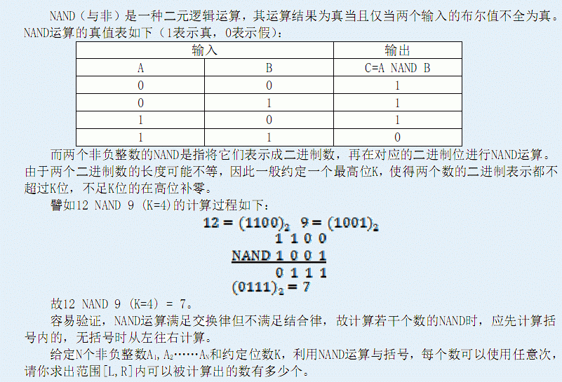
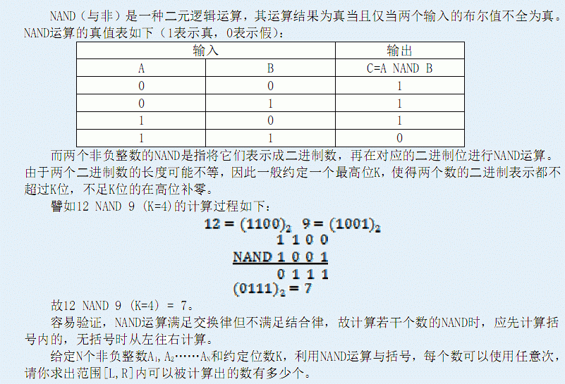

| F.A.Qs | Home | Discuss | ProblemSet | Status | Ranklist | Contest | 入门OJ | ModifyUser Xeonacid | Logout | 捐赠本站 |
|---|
| F.A.Qs | Home | Discuss | ProblemSet | Status | Ranklist | Contest | 入门OJ | ModifyUser Xeonacid | Logout | 捐赠本站 |
|---|

输入文件第一行是用空格隔开的四个正整数N，K，L和R，接下来的一行是N个非负整数A1,A2……AN，其含义如上所述。 100%的数据满足K≤60且N≤1000,0<=Ai<=2^k-1,0<=L<=R<=10^18
仅包含一个整数，表示[L,R]内可以被计算出的数的个数
样例1中，(3 NAND 4) NADN (3 NAND 5) = 1，5 NAND 5 = 2，3和4直接可得。